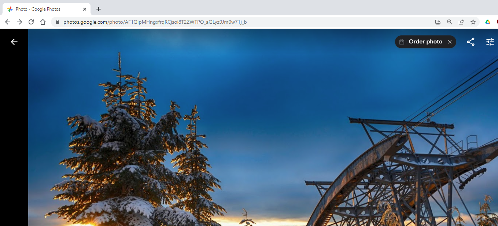
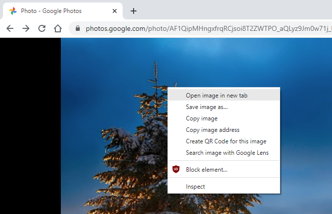
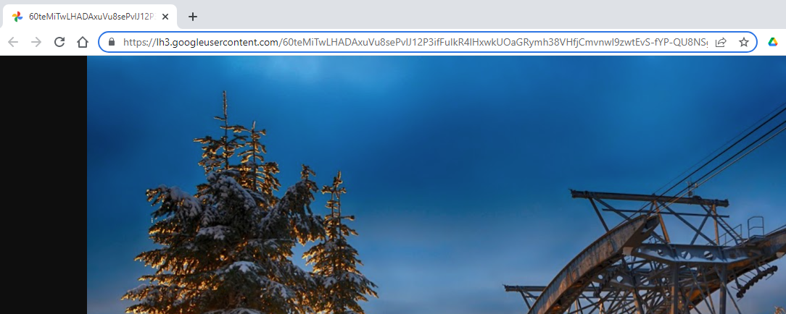
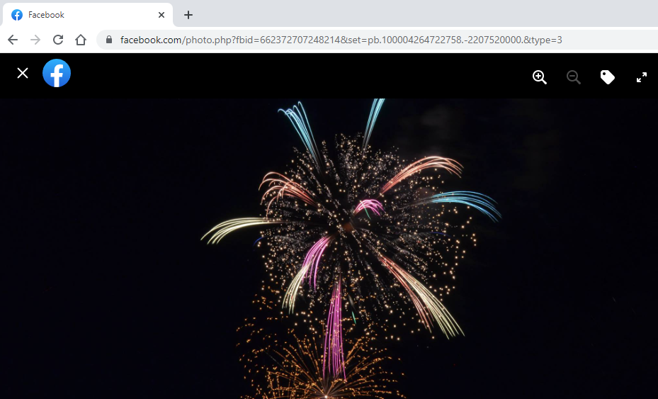
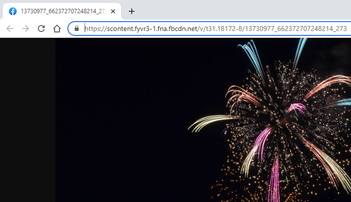

Calendar Chrome Extension support
How do I get the right URL for my image?
When viewing an image online, often the URL of the page is not that of the image, but one that lets you view it as well as share/edit/... it.
Instead, this extension requires the URL of just the image; for instructions on how to find that, select your image source below:
Google Photos
Facebook
Google Image search
Others
Google Photos
For photos stored on Google Photos, when viewing the images the URL will appear starting with
https://photos.google.com/...
,
for example: 
These URLs will not work! To get a URL that works, first right-click the image and select "Open image in new tab":

This will take you to a page with the correct URL. Likely it will be much longer, but will also show only the image and nothing else, and will work with the extension. e.g:

Facebook
Photos from Facebook will often appear on URLs that look like
https://facebook.com/photo.php?...
for example: 
These URLs will not work! To get a URL that works, first right-click the image and select "Open image in new tab":

This will take you to a page with the correct URL. Likely it will be much longer, but will also show only the image and nothing else, and will work with the extension. e.g:

Google Image search
If using Google's image search, each URL will look like
https://www.google.com/search?q=...
and contain many images, for example:
for example:

This URL will not work! Instead, select the image you want, and when the preview shows on the right,
right-click and select "Open image in new tab" (show above). The URL of that new page will be the URL to use.
Other
If you have an image from any other source, you can often right-click and select "Open image in new tab", the URL shown will be the URL of the image.
For example, this works with all the images in this example page too.
Some sites prevent this technique - if you are still having issues, the first recommendation is to switch to one of the other sources listed previously.
If this also does not work, please post a message to the extension's
support page, or
file a bug on this
extension's official site.